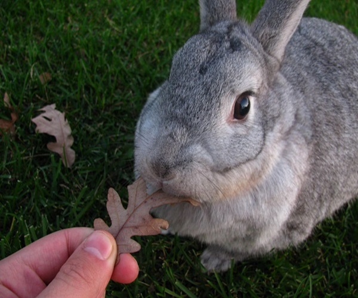
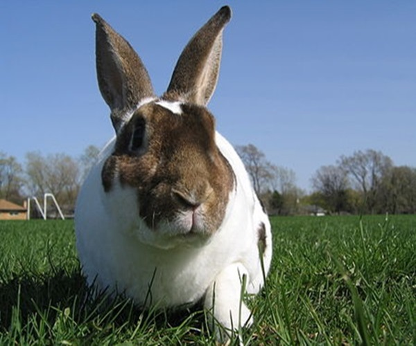
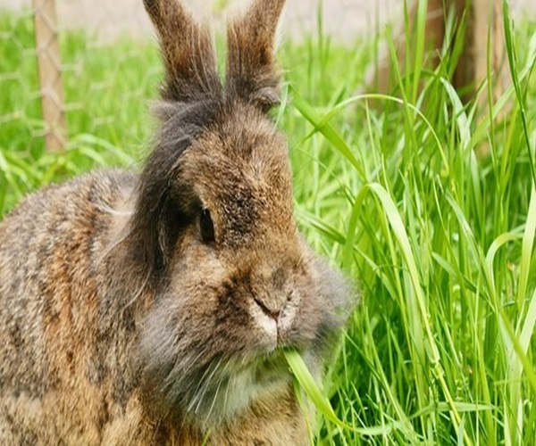
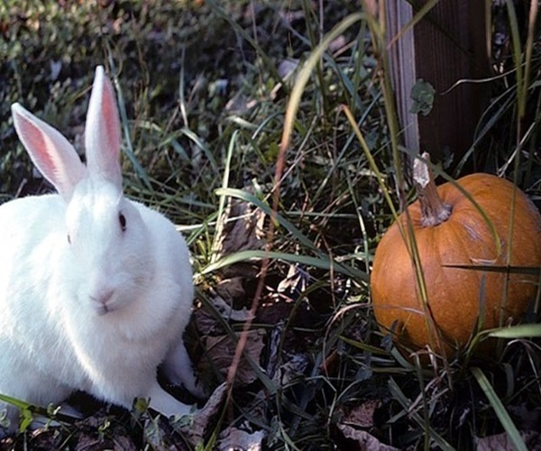
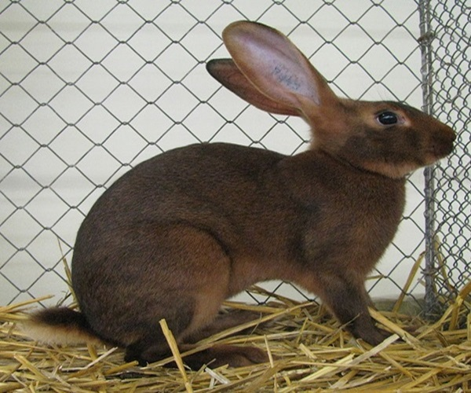
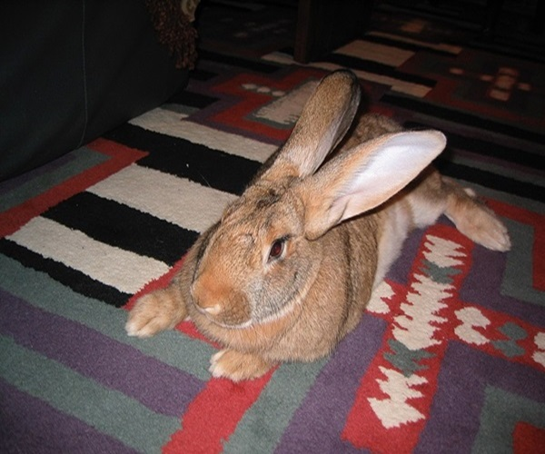
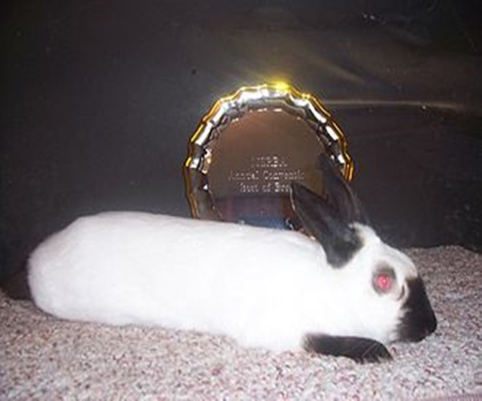
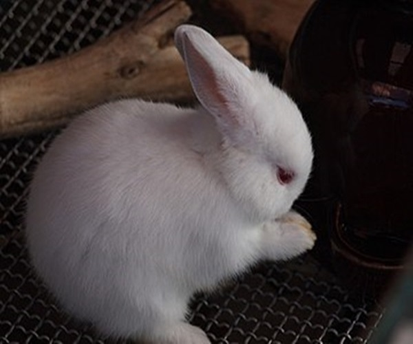

<품종에 따른 분류>
토끼를 품종에 따라 분류하면 다음과 같다.(1) 모피용종
① 친칠라종(Chinchilla)
친칠라와 닮은 털을 위해 사육 된 토끼 품종의 그룹이다. 돌연변이로 인해 머리카락의 노란색 색소가 거의 흰색으로 희석되어 야생 토끼의 털 색깔이 친칠라로 변한다. standard, america, giant의 세 종류가 있다.
② 렉스종(Rex)
1924년 파리 국제 토끼 쇼에서 처음 공개되어 이후 미국으로 수입되었다. 다른 토끼 품종보다 머리가 약간 더 넓고 똑바로 세워진 귀에 비례하며 발은 비례적으로 작다. 모피는 종종 플러시 또는 벨벳으로 묘사된다.
(2) 모용종
① 앙고라종(Angora)
터키의 앙고라에서 시작되었으며 1723년에 프랑스로 옮겨졌다. 18세기 중반에 프랑스 왕족의 인기있는 애완동물이 되었으며, 세기 말에 유럽의 다른 지역으로 퍼졌다. 주로 양모(wool)를 위해 길러지며 섬세함과 촉감이 캐시미어와 비슷하다. 다른 품종의 개발에도 활용되었는데, 그 중 유명한 품종에는 Lionhead와 Dwarf가 있다.
(3) 겸용종
① 뉴질랜드화이트종(New Zealand White)
이름과는 달리 미국 캘리포니아에서 유래되었다. 육류, 가죽, 쇼 및 실험실 용도로 사육되며, 테스트 및 육류 생산에 가장 일반적으로 사용되는 품종이다.
② 백색 일본종(Japanese White)

일본을 제외하고는 공식품종이 아닌 것으로 보인다. 큰 흰색 코트의 아름다움을 위해 일본 애호가들에 의해 일본에서 길러진 종으로 추정된다. 전형적인 흰색 머리와 빨간 눈을 가지고 있다. 세계에서 가장 인기있는 실험실 품종 중 하나이며, 모피와 고기를 얻기 위해 사육되는 경우도 있다.
(내용출처1 : lionheadrabbitcare.com)
(내용출처2 및 사진 출처 : 일본 위키피디아-日本白色種)
(4) 육용종
① 벨기언종(Belgian)
18세기 초 벨기에에서 작은 가축을 통한 실용적인 고기 획득을 위해 만들어졌다. 가늘고 끈적 거리는 프레임과 길고 강력한 다리로 유명하다.
② 플레미시종(Flemish)
네덜란드의 플랑드르에서 유래되었다. 매우 큰 크기와 다양한 색상으로 인해 토끼 쇼에서 인기 있는 품종 중 하나이다. 독특하고 유순한 성격 때문에 "젠틀 거인"이라는 별명을 가지고 있다. 애완동물, 쇼, 번식, 육류 및 모피 동물로 이용된다.
(5) 애완용종
① 히말라얀(Himalayan)
수천 년 전으로 거슬러 올라가는 최초의 토끼 품종 중 하나였으며 이름과는 달리 아시아와 중동이 기원으로 추정된다. 검은 귀, 앞발, 뒷발이 있고 코에 점이 있다. 몸이 차가워지면 털 색깔이 황갈색, 갈색, 파란색, 검은색 등의 다양한 색깔로 변한다.
② 폴리시(Polish)
주로 전시품종과 애완동물로 사용된다. 작고 짧은 귀가 밑에서 끝까지 서로 닿는다. 그리고 짧은 머리에 뺨이 가득하고 눈이 대담하다. 네덜란드 드워프와 종종 혼종되나 털 구조, 신체 유형 및 색상 같은 많은 차이점이 있다.
내용 및 사진 출처 : 위키피디아-Chinchilla rabbit,Rex rabbit,Angora rabbit,New Zealand rabbit,Belgian Hare,Flemish Giant rabbit,Himalayan rabbit,Polish rabbit